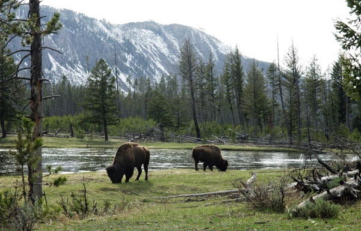
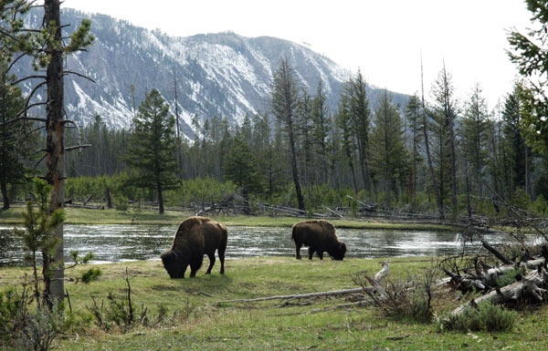
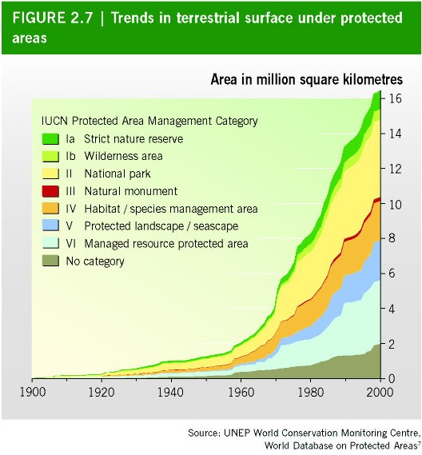

Protected areas, also commonly referred to as conservation areas, are designated geographical spaces managed and preserved for the long-term conservation of natural ecosystems, biodiversity, and cultural heritage.
Websites
What is Protected Area?
Protected areas - national parks, wilderness areas, community conserved areas, nature reserves and so on - are a mainstay of biodiversity conservation, while also contributing to people's livelihoods, particularly at the local level.Protected areas are at the core of efforts towards conserving nature and the services it provides us - food, clean water supply, medicines and protection from the impacts of natural disasters. Their role in helping mitigate and adapt to climate change is also increasingly recognised; it has been estimated that the global network of protected areas stores at least 15% of terrestrial carbon.
What are the benefits of protected areas?
- Provides safe havens for wild plants and animals.
- Strengthen our resilence to climate change.
- Maintain the functioning of ecosystems.
- Improves our overall health and well-being through contact with nature.
- Benefits and Diversifies local economies.
- Provides oppurtuinities for outdoor recreation.
- Conserves vital gene pools.
 

How do protected areas work?
Protected areas are implemented for biodiversity conservation, often providing habitat and protection
from
hunting for threatened and endangered species.Protection helps maintain ecological processes that
cannot
survive in most intensely managed landscapes and seascapes.They are essential for conserving
biodiversity,
and for delivering vital ecosystem services, such as protecting watersheds and soils and shielding
human
communities from natural disasters.
